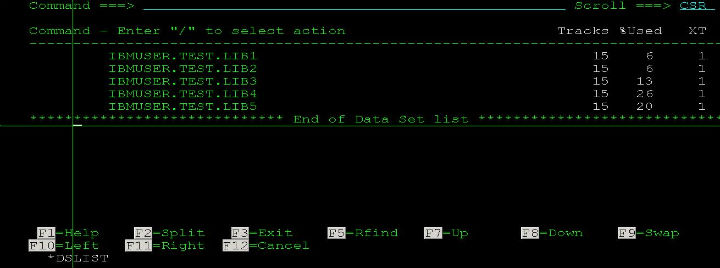

ISPF中通配符%和*的使用
2011-08-08
在日常的操作过程中，发现通配符__%和__使用的场合还是很多的，而且重要的是，如果使用好的话，真的是会很大程度上提高工作效率的。
和其他系统的通配符没什么区别，在大机上也是这么定义的：
_%：任意一位字符
*__：任意一至多位字符
下面举两个例子：
输入：IBMUSER.TEST.LIB%

输入：IBMUSER.*.LIB

当然，两者可以根据你的需要任意组合使用，这个是没问题的。就像：IBMUSER.*.LIB%这样。